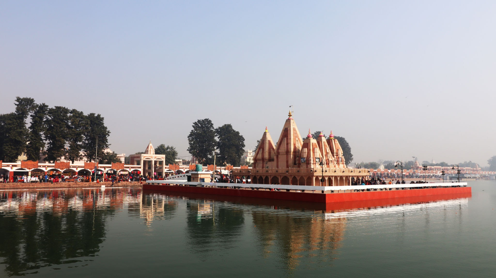

|
The Kurukshetra Panorama and Science Centre is located next to Shrikrishna Museum in, Kurukshetra city, Haryana, India about 1.5 km from Kurukshetra railway station. |
| The museum, unravels the mystique of the cult of Lord Krishna. It endeavours to present the multifaceted personality of Krishna as narrated in the episodes of Mahabharata and the Bhagvata Purana. The museum has six galleries, three each in two blocks. On display are stone sculptures, bronze castings, leaf etchings, miniature paintings, clay pottery and terracotta artifacts. |
|
|  |
Brahma Sarovar is an ancient water pool sacred to Hinduism in old Kurukshetra city, in the state of Haryana in North India, India. Hinduism lays emphasis on taking bath for internal and external purity. Most religious sites have water pools or sarovar in or near the Hindu temple and Sikh gurdwara. |
| Sarveshwar Mahadev Temple is a Hindu temple dedicated to Lord Shiva located at Kurukshetra City in Haryana State, India. Sarveshwar Mahadev Temple is also commonly known as Brahma Sarovar Temple. The Temple is considered as Thevara Vaippu Sthalam as Devaram hymns had a mention about this Temple. |
 |
|
OP Jindal Park & Musical Fountain was built in the memory of the Power Minister of the state, O P Jindal. The attraction is an expansive park covering about 14 acres of land that has lush green lawns with fountains, a jogging park, fully functioning children's play area, a quiet meditation centre and a fragrant rose garden. |
| ISKCON’s Kurukshetra Centre, The Glory of Haryana, a unique cultural & Vedic educational centre spread over an area of 6 acres. |
 |